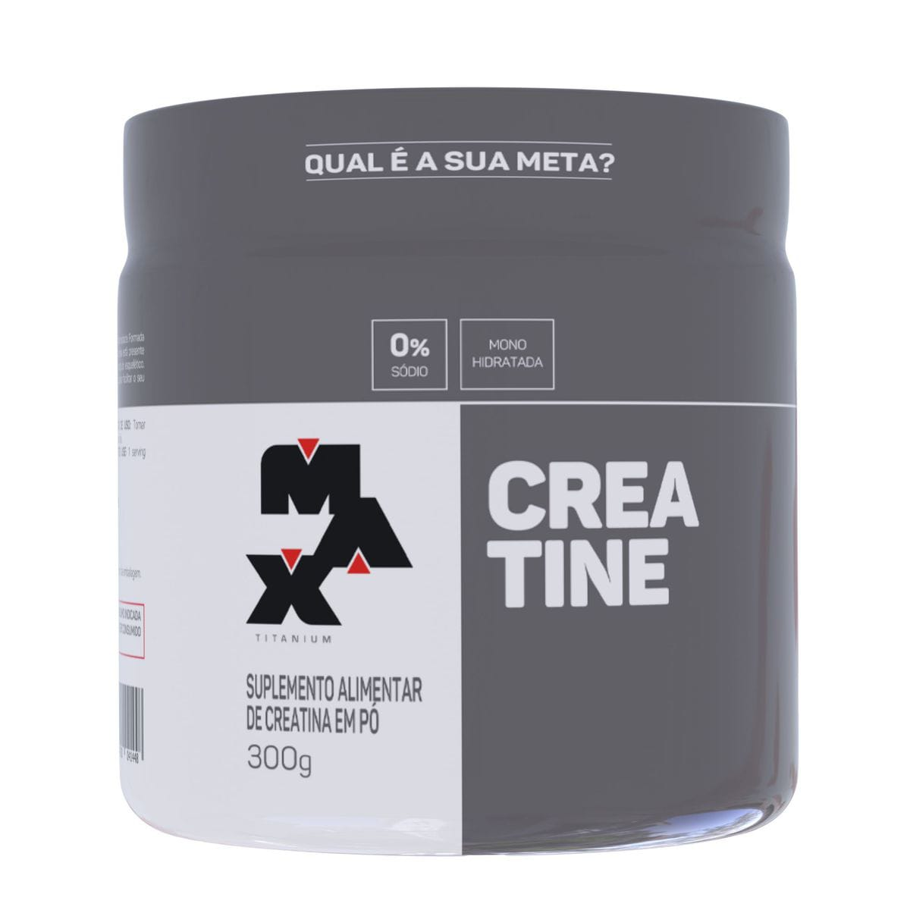
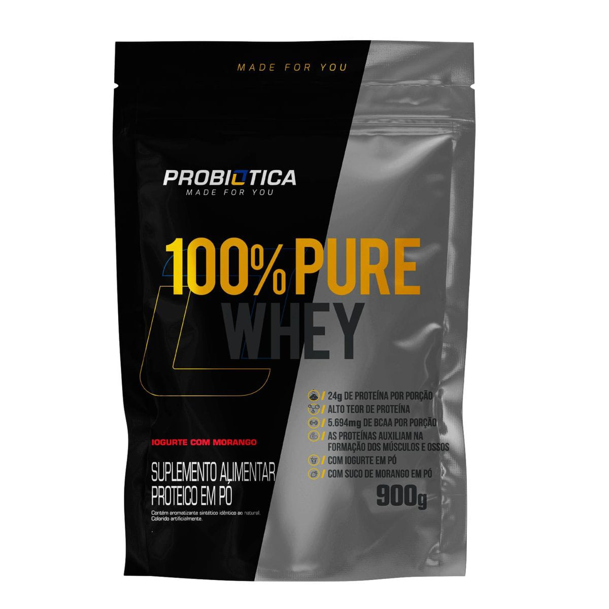

<div class="grid">
    <div ngFor="" class="grid-item">
        
        <span class="grid-item-title">Creatina - Max Titanium</span>
        <!-- <span class="grid-item-desc">O principal papel da creatina no organismo está relacionado com a geração de energia para o corpo, pois a creatina é fundamental ao sistema ATP-CP, que é considerado um dos principais sistemas metabólicos utilizados na musculação.</span> -->
        <span class="grid-item-value">R$97,90</span>
        <!-- <button class="grid-item-button" click="">Comprar</button> -->
        <a href="https://wa.me/p/7204534086280640/5516993392966" class="grid-item-button">
            <i class="fa fa-shopping-cart"></i>
            <span>Comprar</span>
        </a>
    </div>

    <div class="grid-item">
        
        <span class="grid-item-title">100% Pure Whey Refil 900g - Probiótica - Iogurte de morango</span>
        <!-- <span class="grid-item-desc">100% PURE WHEY® é o suplemento proteico campeão de vendas Probiótica, composto basicamente por proteína concentrada do soro do leite (whey protein concentrate), matéria-prima elaborada com alta tecnologia e com elevada concentração de aminoácidos. De preparo instantâneo, 100% PURE WHEY® é indicado para ser tomado antes e/ou após os exercícios.</span> -->
        <span class="grid-item-value">R$98,90</span>
        <!-- <button class="grid-item-button" click="">Comprar</button> -->
        <a href="https://wa.me/p/7036300206453682/5516993392966" class="grid-item-button">
            <i class="fa fa-shopping-cart"></i>
            <span>Comprar</span>
        </a>
    </div>
</div>